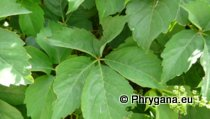
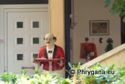

")
la Crète entre le Kédros et la mer Libyenne (principalement)
mais aussi ailleurs (Belgique) au gré des rencontres
;
|
|
 |
Phrygana la Crète entre le Kédros et la mer Libyenne (principalement) mais aussi ailleurs (Belgique) au gré des rencontres |
 | |
| Dolicharthria bruguieralis | Parthenocissus quinquefolia | enseignes | ||
| Espèces: 472 --- Faune: 214 --- Flora: 258 | |||||
| Nouveautés | |||||
| Fauna: | Prochoristis crudalis | Flora: | Zantedeschia aethiopica | Flora: | Selaginella denticulata |
| Fauna: | Autophila dilucida troniceki | Flora: | Tradescantia zebrina | Fauna: | Decticus albifrons |
| 23 août 2013 |
| Photographies © paul fontaine |
| No part of this work may be used for
commercial purposes without the written permission of the author. Aucune utilisation commerciale n'est possible sans l'autorisation écrite de l'auteur. |